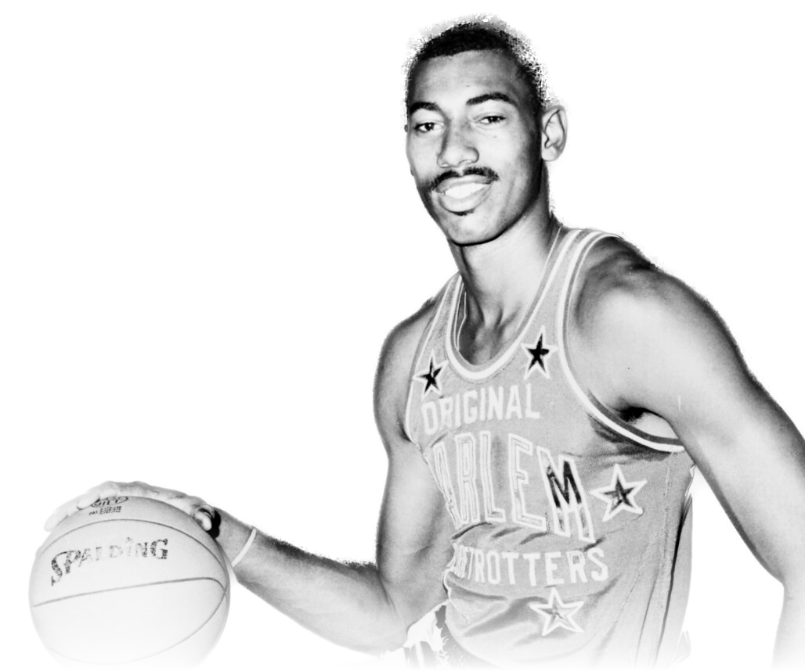
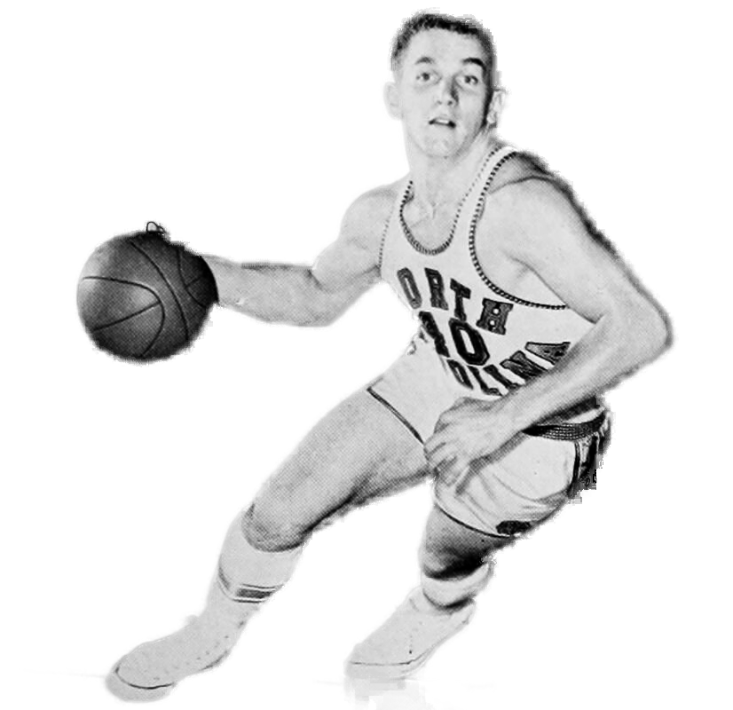
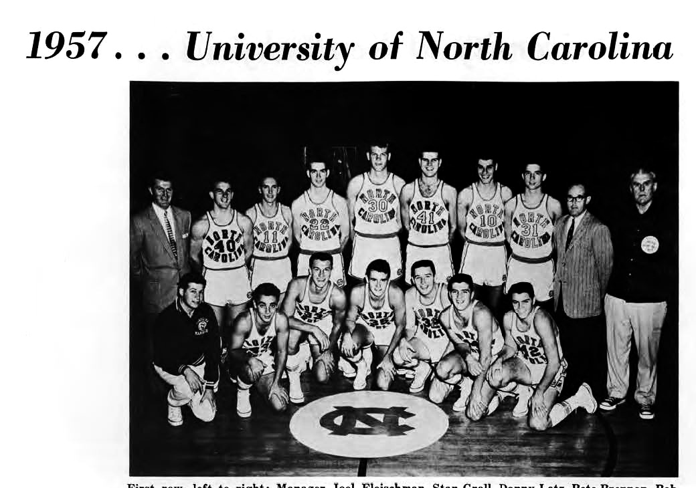
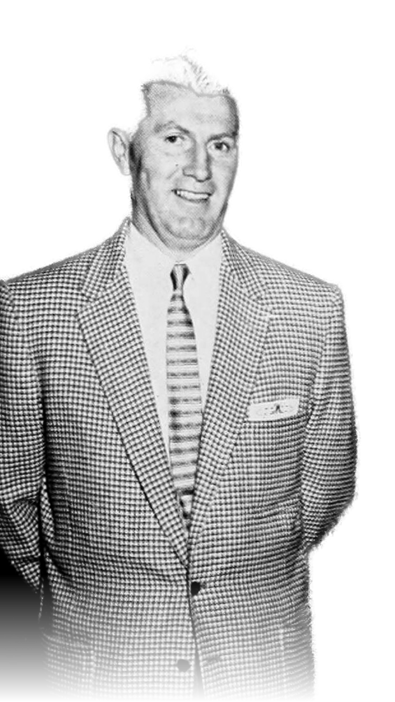

WILT CHAMBERLAIN
TOMMY KEARNS
Fotos: Fred Palumbo / Library of Congress (1959) y anuario Yackety Yack (1957) · dominio público · alturas: recreación

PROGRAMA DE LA NCAA · 1963
FINAL · TRIPLE PRÓRROGAKANSAS CITY · 23·03·1957
Programa del campeonato de la NCAA (1963) · dominio público
KANSAS · FOTO DE 1959WILT CHAMBERLAIN
Foto: Fred Palumbo (New York World-Telegram & Sun) · Library of Congress · dominio público

ENTRENADOR · NORTH CAROLINAFRANK McGUIRE
BASE · NORTH CAROLINATOMMY KEARNS
Fotos: anuario Yackety Yack de UNC (1957) · dominio público · círculo: recreación
PERDIDO
Frank McGuire · citado por KU Sports, 2007
FINAL NCAA · 23·03·1957 · MARCADOR: RECREACIÓN
PRÓRR. 1
PRÓRR. 2
PRÓRR. 3
54
–
53
NORTH CAROLINA
KANSAS
Fotos: dominio público (Fred Palumbo / Library of Congress; anuario Yackety Yack de UNC, 1957; NCAA, 1963),
vía Wikimedia Commons. Alturas, pista, pizarra y marcador: recreación.